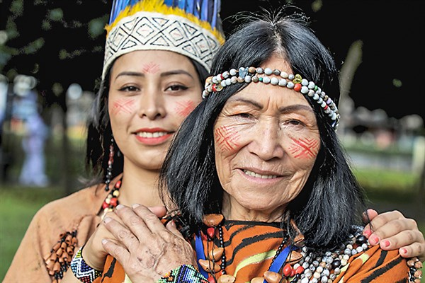
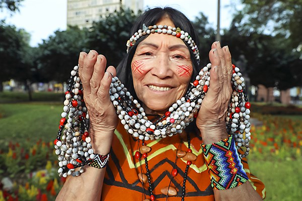

El idioma Yanesha
El Yanesha, también conocido como Amuesha, es una lengua de la familia Arawak hablada en la selva alta central del Perú, especialmente en la región de Pasco. Es un idioma fundamental para la transmisión de los conocimientos ancestrales y la identidad cultural del pueblo Yanesha.
Actualmente, existen cerca de 7,000 hablantes, aunque este número varía según las fuentes. Debido a la influencia del español y otros factores sociales, el idioma se encuentra en situación vulnerable, razón por la cual se promueven programas de revitalización y enseñanza en las comunidades.
Primeros pasos para aprender Yanesha
- Saludos básicos: Aprende palabras como “Shora” (hola), “Jema” (adiós).
- Frases cotidianas: Cómo preguntar “¿Cómo estás?” o responder de manera sencilla.
- Números y colores: Reconocer los más comunes para usarlos en la vida diaria.
- Pronunciación: Familiarizarse con sonidos propios del idioma.
Lo más importante es practicar en contextos sencillos, como presentarse, saludar o describir objetos cercanos. Con la repetición y la práctica diaria, se refuerzan las bases del idioma.
Glosario Yanesha
Saludos
| Español | Yanesha |
|---|---|
| Hola | Shora |
| Adiós | Jema |
| Buenos días | Poetarey / Yethoy |
| Buenas tardes | Llerroy |
| Buenas noches | Tsapoy |
Verbos
| Español | Yanesha |
|---|---|
| Hablar | Eñoreñets |
| Comer | Rreñets |
| Vivir | Womcheñets |
| Trabajar | Tarwaseñets |
| Estudiar | Eñotañteñets |
| Pensar | Yopchapechen |
| Dormir | Yomuen |
| Jugar | Yellesheñechen |
| Reír | Yescheta' |
| Llorar | Yawena |
| Cantar | Yesmorrecha' |
| Correr | Yemaya' |
Frases
| Español | Yanesha |
|---|---|
| ¿Cómo se llama? | ¿Eso' nesochena? |
| ¿Cómo está? | ¿Womchapeta? |
| ¿A dónde va? | Awen Chesa' |
| Estoy bien | Womchayca |
| Quédate en casa | Allá pecua pocoll |
Método de repaso
Antes de realizar el test, te recomendamos repasar los saludos, verbos y frases básicas del idioma. Esto te ayudará a familiarizarte con las estructuras y recordar vocabulario importante. Piensa en este repaso como un entrenamiento previo para poner a prueba lo aprendido.
Ir al Test